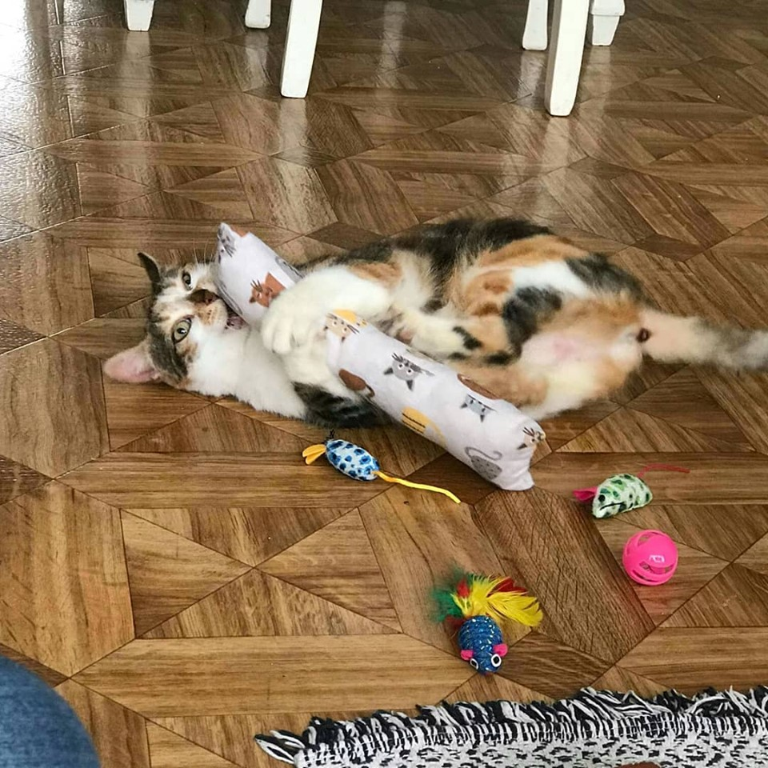

Steun onze asieldieren
Steun onze asieldieren met een foto wenskaart.
Te koop in het asiel tijdens de openingsuren
ma.-vr. 13u30 tot 17u30 en zat. 12u tot 16u.
De kaartjes zijn 2,5 euro per stuk.
Contact en informatie
Antwerpse Keten voor Dierenbescherming vzw
Dierenasiel Schoten
Sluizenstraat 119
www.dierenasielschoten.be
Opendeurdag 2018
Zondag 30 september was het opendeurdag in het Dierenasiel van Schoten.
De gelegenheid om een eens kijkje te komen nemen naar de werking van het asiel. Er was ruime gelegenheid voor een gezellige babbel met een hapje en een drankje onder de tenten of in het zonnetje. De viervoeters waren ook van harte welkom op de feestweide.
Kortom een hele leuke namiddag onder dierenvrienden. Bedankt aan alle sponsors, standhouders , vrijwilligers en bezoekers die aanwezig waren!

Meter en Peterschap
We hebben in ons dierenasiel veel poezen en honden. Er zijn er die wachten op een nieuwe thuis, maar er zijn er ook die bij ons langer zullen blijven, sommigen door hun leeftijd, anderen om medische aandoeningen en sommigen hebben al zoveel meegemaakt dat een herplaatsing niet gemakkelijk is.
Wil jij deze poezen helpen ? Dan kan je dit doen door van één van deze verblijven het meter/ peterschap op je te nemen. Door je meter/ peterschap help je het dier dat in dat hokje verblijft met voeding en medische zorgen.
Je kan een meter/ peterschap voor één jaar op jou nemen. Er zijn 2 mogelijkheden.
- poezenverblijf: Voor 12.50 euro/ 150 maand of euro op jaarbasis
- hondenverblijf: oor 15 euro/maand of 180 euro op jaarbasis
Heb je interesse om peter of meter te worden? dit kan door een overschrijving te maken op nr Fortis BE15 220-0412438-30 met de vermelding van meter of peterschap. We danken u alvast voor jullie steun!

Adoptieverhaal
Ook uw verhaal op deze website? dierenasielschoten@gmail.com
De gebruiker mag geen informatie verkregen op deze site wijzigen, kopiëren, verdelen, doorgeven, verspreiden, weergeven, reproduceren, publiceren op om het even welke wijze of door om het even welk middel of criterium, zonder voorafgaande en schriftelijke toelating van De Antwerpse Keten voor Dieren vzw.
Onze Mouche (Mouchoir) heeft het hier nog steeds naar zijn zin. Hij is een dankbare, lieve kater geworden. Love him so much!.
Noctis voelt zich ook al helemaal thuis.
Momo, nu Beans, maakt het heel goed, hij wijkt niet meer van de zijde van zijn nieuwe vrouwtje en slaapt al vanaf de eerste nacht bij haar onder de dekens.

Marie (Carola) en Louis (Cooper) voelen zich al goed thuis.
Hallo, zoals beloofd, zenden wij jullie enkele foto’s van Bougie. Zoals jullie kunnen zien, stelt ze het super goed. Ondertussen gaat ze ook buiten in de tuin, maar ze ligt liever binnen, lekker lui op de schoot of de zetel.
Groetjes
We wilde jullie een kleine update geven over Nico. Hij voelt zich de koning ter rijk sinds hij buiten kan. Hij brengt ons dagelijks 2 tot 4 muizen, klimt in de bomen van onze tuin, komt aangelopen zodra we thuiskomen.
Een klein berichtje van Yana die over 7 weken nog bij jullie was. Yana stelt het wel, is heel rustig , luistert goed en heel lief naar mensen toe.
Irra is nu 2,5 maanden bij mijn ouders. Volgens mij is ze gelukkig bij hen en mijn ouders zijn gelukkig met haar.
ik wou jullie maar even laten weten dat het supergoed gaat met miss Bee. Ze is eigenlijk heel rustig en slaapt veel.
Marie (Carola) en Louis (Cooper) voelen zich al goed thuis.
Fieke en Taps zijn nu iets meer dan 2 jaar bij ons. Een leven zonder hen is niet meer voor te stellen. Echte lieve dieren.
Wij hebben een fantastische keuze gemaakt toen wij haar adopteerden - wij hebben er nog geen minuut spijt van.
Steun ons
Schenk nieuw of gebruikt materiaal
Manden, eetpotten, hals- en leibanden, dekens, handdoeken, transportkooien, hondenhokken, kattenkrabpalen, kattenbakvulling , in goede staat
Schenk ons voeding
Honden- of kattenvoeding, kauwbeentjes, snoepjes
Schenk ons een financiele bijdrage
Om de dierenarts, voeding, materiaal ... te betalen. Elke gift, hoe klein ze ook is, helpt ons al een stapje verder! Stort het bedrag op rek.nr. BE15 220-0412438-30 en vermeld duidelijk 'Steun' en uw naam en adres.
Onze VZW opnemen in uw testament
Onze vzw opnemen in uw testament, een prachtige gift voor de toekomst van de dieren. Als u van plan bent één of meerdere goederen te vermaken aan de vzw, is het voldoende enkele eenvoudige regels in acht te nemen.
De eerste mogelijkheid bestaat erin het testament onder vorm van een akte op te stellen bij een notaris. De tweede mogelijkheid is een eigenhandig geschreven testament op te stellen, zonder doorhalingen of verbeteringen. Hiervoor zijn geen getuigen vereist en moet gedagtekend en ondertekend zijn. Wilt u zekerheid dat alles zal uitgevoerd worden zoals door u werd bepaald dan is het raadzaam dit testament aan een notaris af te geven, die het zal laten registreren. Indien u dit niet wilt, maar wenst u wel de zekerheid dat uw laatste wil uitgevoerd gaat worden, is het mogelijk dat u ons een kopie laat toekomen.
Dit is mijn testament.
Ondergetekende....................(naam, voornamen, datum en plaats van geboorte, woonplaats)
vermaak aan de vzw De Antwerpse Keten voor Dierenbescherming, met maatschappelijke zetel in de Sluizenstraat 119
te Schoten, de som van ..............euro (of de goederen hieronder aangeduid), vrij van alle successie- of andere rechten.
Andere mogelijkheid:
Ik wens dat de terreinen, hieronder aangeduid, toevertrouwd worden aan en beheerd worden door dezelfde vereniging. Opgesteld te...............op............(datum voluit in letters)
Het spreekt voor zich dat de legataris zijn beslissing kan handhaven of zijn testament kan veranderen door middel van een eigenhandig geschreven brief. Mocht u nog aanvullende vragen dan kunt natuurlijk ook ten allentijde
contact opnemen met uw notaris of met ons.